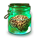

PoE Romp - Organ Finder
Maps by organ
1) Select needed organ
- Heart
- Eye
-  Brain
-
 Lung
Lung
- Liver
2) Find maps you want to run
You can sort by clicking on the table headings and you can search by any value in the table.
| Map | Region | Tiers | # | Organs | Probability Eye | Probability Liver | Probability Heart | Probability Brain | Probability Lung |
|---|
Sort table by organ drop probability
Note: changing your needed organ in step 1) resets the sorting of the table to that selected organ.
Note: changing your needed organ in step 1) resets the sorting of the table to that selected organ.
3) Run the listed maps
By choosing a single unique organ inside of a map to create the Metamorph encounter, you are guaranteed to get an organ that matches this type.
Choosing multiple unique organs will drop one of those randomly .
Organs by map
- Heart
- Eye
- Brain
-
Lung
- Liver
Changelog | Source Code | Map & Organ Data | Design Inspiration | Images
Questions, feature requests or feedback? Comment on reddit!
Ideas for a new tool that would benefit the community? Message me on reddit!
Made by Romp. Last updated December 20, 2019.